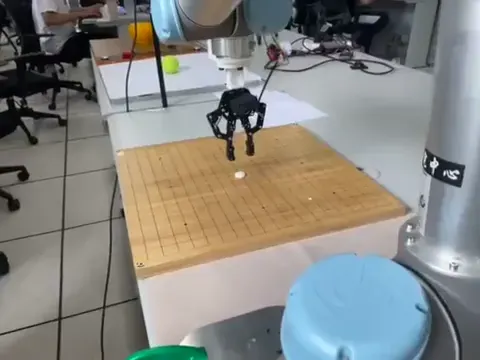

视觉操作Visual manipulation
机械臂棋子视觉抓取Robotic visual grasping of game pieces
面向棋盘上小尺寸棋子的视觉抓取，将棋子位置与夹爪接近、夹取动作衔接；实机演示展示协作机械臂对棋子的定位、夹持和操作过程。For visual pickup of small pieces on a game board, target positions are connected to gripper approach and closure. The physical demonstration shows a collaborative arm localizing and grasping a board piece.
- 参与类型Involvement
- 参与项目Collaborative project
- 操作对象Objects
- 棋盘与棋子Game board and pieces
项目背景Background
棋子尺寸小、形状相近，棋盘纹理与夹爪接近方向都会影响视觉定位和抓取。任务需要把相机观察到的目标位置转换为机械臂可执行的动作，并处理夹爪与棋盘之间的空间关系。Small, similarly shaped pieces and a patterned board challenge visual localization and grasp approach. The task connects camera-observed targets with executable arm motion while accounting for the gripper’s clearance above the board.
任务说明Task
在棋盘区域定位目标棋子，调整夹爪对准目标，完成接近、闭合夹持与后续移动。实机演示聚焦视觉目标和末端操作之间的衔接。Locate a target piece on the board, align the gripper, and execute approach, closure, and subsequent movement. The demonstration focuses on connecting a visual target with end-effector operation.
设备说明Hardware
实机包含协作机械臂、末端夹爪和棋盘工作台。视频从近距离观察夹爪与棋子的相对位置及接触过程。The setup comprises a collaborative arm, an end-effector gripper, and a board workspace. A close view documents the relative positions and contact between the gripper and piece.

系统和关键技术System and key technologies
流程围绕视觉目标定位、抓取位置对准和机械臂动作执行展开，将目标识别结果与夹爪接近、闭合和移动等阶段连接。小物体抓取重点关注定位偏差、夹爪开口和接近方向对接触结果的影响。The workflow connects visual target localization, grasp alignment, and arm execution through approach, closure, and movement. Small-object manipulation makes localization error, gripper opening, and approach direction particularly relevant to contact outcomes.
演示与结果Demonstration
以下片段来自 PPT 中的棋盘实机抓取视频，展示机械臂在棋盘工作区对小尺寸棋子的操作过程。The supplied PPT clip documents physical arm manipulation of a small piece in the board workspace.